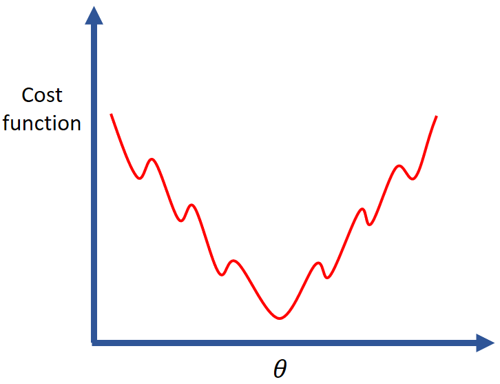
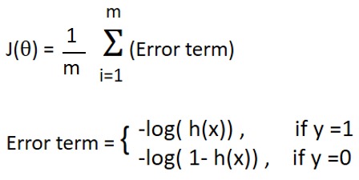
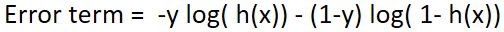
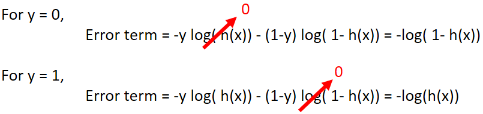
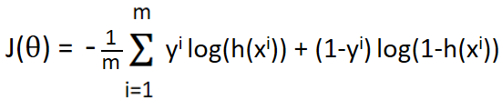
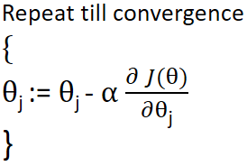
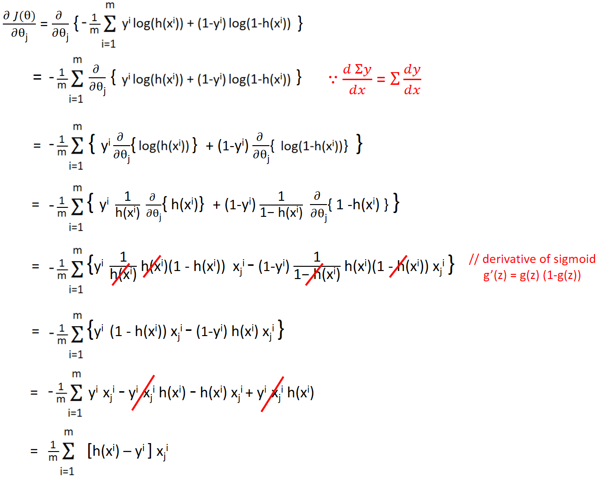
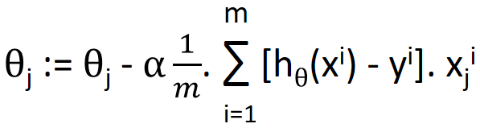
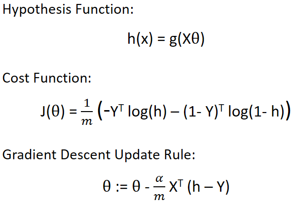

HOME BLOG EBOOKS ABOUT CONTACT SHOP
In the last section, we saw that linear regression hypothesis function needed to be modified inorder to be used for logistic regression problems. Now the obvious question is whether the same cost function can be used here also or is some modification necessary required.
The reason that cost function worked for linear regression was because the hypothesis was linear and hence the cost function was convex shaped with a single global minimum. In case of logistic regression, the hypothesis function is no longer linear because of the sigmoid function and using the same definition for cost function would yield a function as shown below.

It will be an impossible task to optimize the parameters theta when using such a cost function with so many local minimums.
The cost function for Logistic regression is given by:

In case of linear regression, the error term was half the square of the difference between predicted output h(x) & real output (y). Here things are much trickier. The actual logic behind choosing such a cost function lies in probability theory and it’s best not touched upon if are not familiar with it. We will provide optional articles at the end of the blog series to discuss such topics.
For now, think of it this way; log & exponential are inverse functions, meaning log of exponential of a number results in the number itself, so by introducing log we are canceling out the no linearity introduced by the sigmoid function. This way we make sure that the cost function is convex shaped with once global minimum.
Also notice how the error term is defined separately for both y=0 and y=1 points? For ease of expression, we can combine the two error terms into one as following:

This combined expression is same as the 2 separate expressions. You can verify this yourself by substituting y=0 & y=1.

So the cost function can be re written as:

Just like in linear regression, here too our goal is to minimize the cost function and find the parameters corresponding to minimum cost function.
The gradient descent is implemented as follows:

Substituting the equation for the cost function, we can get the parameter update rule as:

Therefore, the update rule for Logistic regression is,

If you look back, you’ll notice that this is the exact update rule we used for Linear regression, so what changed? The difference is in the definitions for hypothesis function in both cases.
